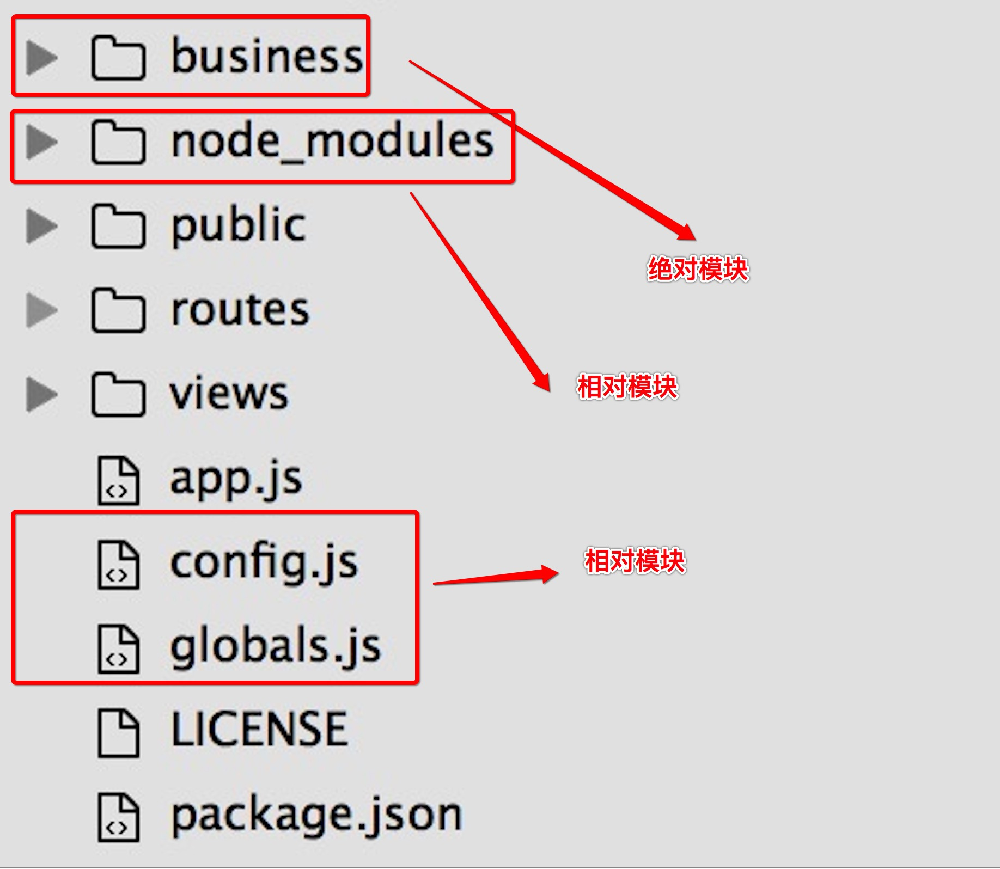

global对象
全局对象，意味着我们能够在程序的任何一个地方访问到它。
global
浏览器的 window 一样
process
进程对象，所有全局执行上下文都在其中
//NodeJS程序运行的端口号
process.env.PORT
require
说到
require，我们首先要明白NodeJS中的模块系统。NodeJS的模块系统，是作为一种工具，帮助我们能够快速构建NodeJS应用。就像JavaScript中，有Jquery一样。它主要帮我们集中解决了全局命名空间的污染以及命名冲突的问题
NodeJS中的模块，分为
绝对模块和相对模块其中绝对模块又分为：
- NodeJS的内置模块，如
http、fs、url等；在我们安装好NodeJS开发环境之后就有了- node_modules文件夹中的模块，通过
npm install xxx安装相对模块是指一个相对目录中JavaScript文件或者一个相对路径的JavaScript文件，如下图： 
require就是用来引入绝对模块和相对模块的。
//引入绝对模块
var http = require("http");
var express = require("express");
//引入相对模块
var globals = require('./globals');
var config = require('./config');
var business_chat = require('../business/chat-tunnel-handler');